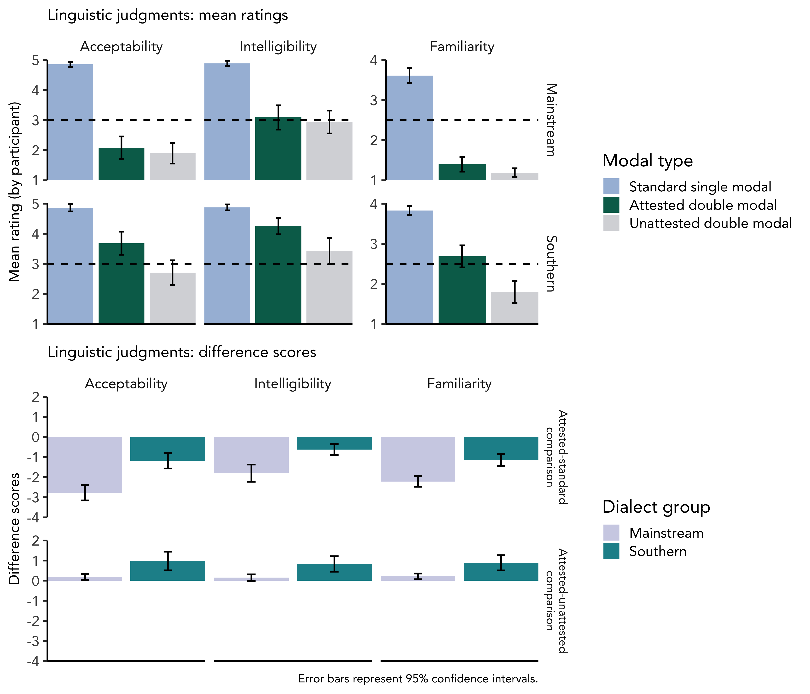

We "might could" revisit syntactic processing:
Studying dialectal variation with event-related potentials
Holly A. Zaharchuk, Adrianna Shevlin, Janet G. van Hell
Department of Psychology & Center for Language Science, The Pennsylvania State University
Background
- Variation across individuals, accents, and dialects is inherent to language
- Theories of language processing primarily draw on evidence from standard language varieties
- Syntactic processing research with EEG typically relies on written stimuli with grammatical violations or ambiguities
- Production-Distribution-Comprehension (PDC) model provides mechanistic account of relation between familiarity and processing in previous research on dialect (MacDonald, 2013)
- Double modals: “socially diagnostic” Southern dialect feature signaling indirectness or hedging (Bernstein, 2003; Hasty, 2012; Mishoe & Montgomery, 1994)
Stimuli
| Condition | Context sentence | Type | Target sentence |
|---|---|---|---|
| Critical | “Kaitlyn is having a hard time with her essay.” | Standard single modal | “She thinks she should ask the professor for an extension.” |
| Attested double modal | “She thinks she might should ask the professor for an extension.” | ||
| Unattested double modal | “She thinks she could should ask the professor for an extension.” | ||
| Filler | “Kaitlyn waits for the bus every morning to go to work.” | “She said the that bus is usually late.” | |
| Root modals used: could and should |
Predictions
| Type | Mainstream | Southern | Mainstream | Southern |
|---|---|---|---|---|
| Standard single modal | Baseline | Baseline | High | High |
| Attested double modal | (N400-)P600 | Same as baseline | Low | Similar to standard single modals |
| Unattested double modal | Same as attested double modals | Lower than single and attested double modals | ||
| ERP time-locked to second modal (could or should) in attested double modal sentences to compare to standard single modal |
Participants
| Group | Stage | Location | Dialect | Total tested | ERP | Offline | Mean age |
|---|---|---|---|---|---|---|---|
| Mainstream | Complete | Did not live in the South for a significant period of time | Not exposed to “might could” and unfamiliar with double modals | 30 | 25 | 27 | 19.61 |
| Southern | Ongoing | Lived in the South during childhood or adolescence | Exposed to “might could” or familiar with double modals | 23 | 20 | 22 | 19.86 |

Both dialect groups were sensitive to syntactic variation at the structure-building (Early AN) and integration (P600) levels of processing
Southern participant group
Offline tasks

Results
- Attested double modals engaged automatic detection of non-standard speech and syntactic reanalysis in both dialect groups
- Southern participants rated attested double modal constructions higher on acceptability, intelligibility, and familiarity than Mainstream participants
- Neural results went against experience-based predictions, but behavioral results reflected dialect experience
Conclusion
Are our brains more prescriptive than our mouths?
- Complexity and constraints of experience-based theories of language processing in accounting for dialectal variation
- Need for enhanced experience-based model of language processing incorporating notions of social weighting, salience, and prescriptive language ideologies (Sumner, Kim, King, & McGowan, 2014)
- Future direction: studying Southern speakers in their local communities with The Brain Bus (mobile EEG system)
References and acknowledgements
Bernstein, C. G. (2003). Grammatical features of Southern speech: Y’all, might could, and fixin to. In S. J. Nagle & S. L. Sanders (Eds.), English in the Southern United States. Cambridge University Press.
Hasty, J. D. (2012). We might should oughta take a second look at this: A syntactic re-analysis of double modals in Southern United States English. Lingua, 122(14), 1716–1738.
MacDonald, M. C. (2013). How language production shapes language form and comprehension. Frontiers in Psychology, 4.
Mishoe, M., & Montgomery, M. (1994). The pragmatics of multiple modal variation in North and South Carolina. American Speech, 69(1), 3–29.
Sumner, M., Kim, S. K., King, E., & McGowan, K. B. (2014). The socially weighted encoding of spoken words: A dual-route approach to speech perception. Frontiers in Psychology, 4(1015).

Holly Zaharchuk: hzaharchuk@psu.edu
University Graduate Fellow (UGF)